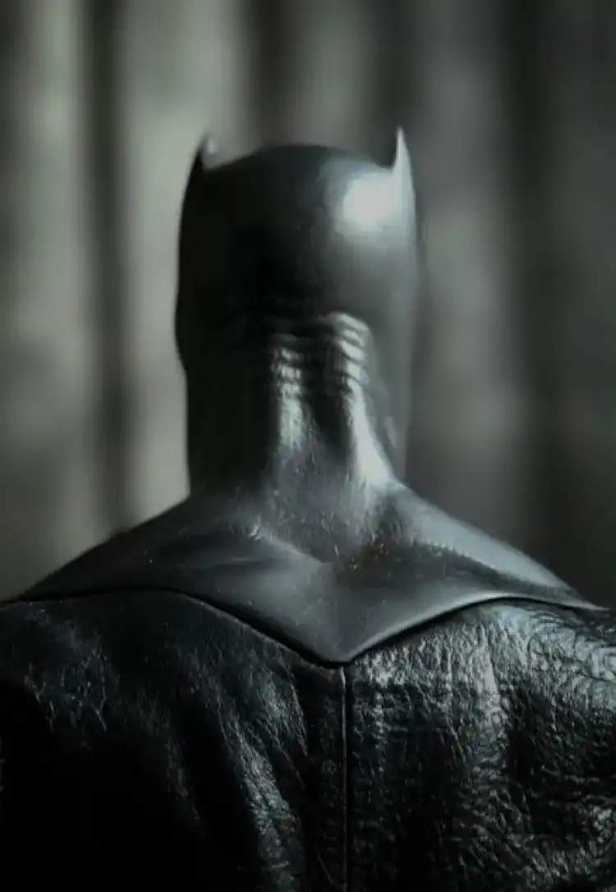
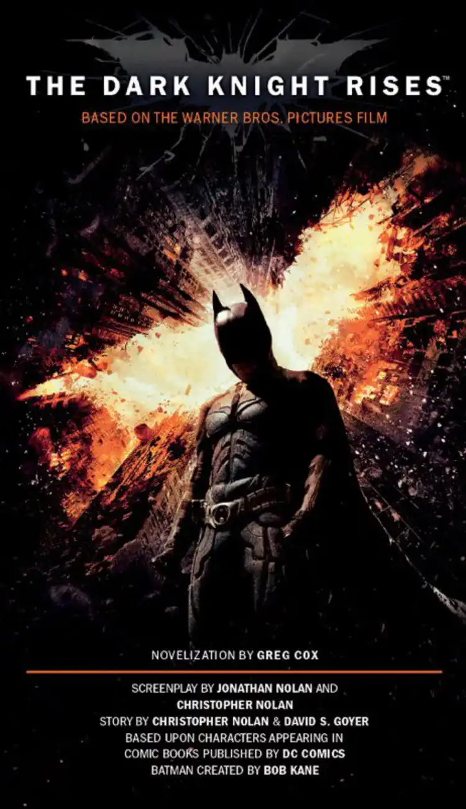
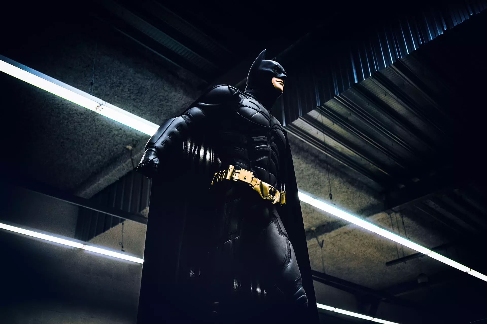
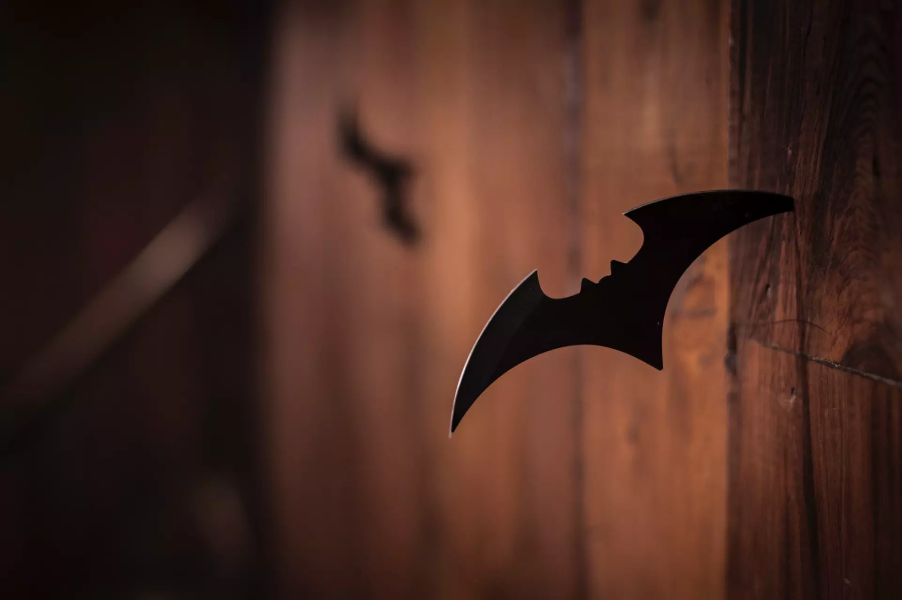
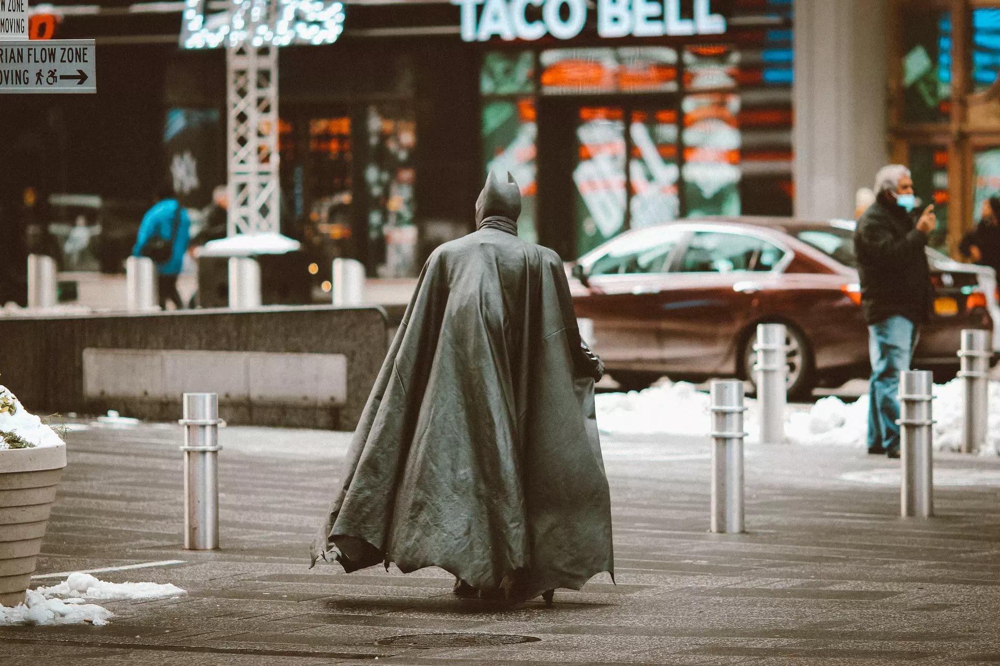

Batman l'anti-héros
Légende : Batman énervé @unsplash
Je m'appelle Martin Crevoisier, je suis en 1ère année du DUT MMi à Montbéliard. Je réalise dans le cadre de mes études un site pour mobile sur le thème "Bilan carbone d'un super-héros". J'ai choisi Batman en relation avec l'obsolescence programmée.

Affiche The Dark Knight Rises @allocine
Viens découvrir ce qui fait le succès de Batman et pourquoi il peut baisser dans l'estime des gens.
Lire la suite
L'emprunte carbone de Batman est démesurée ! Viens voir à quel point il peut-être un anti-héros.
Lire la suite
Diminuer son emprunte carbone tout en faisant des économies, c'est possible ! C'est par là que ça se passe.
Lire la suite
Images de Batman


